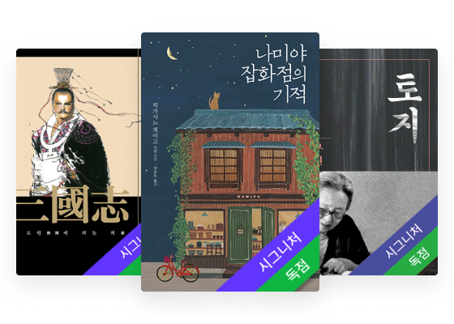
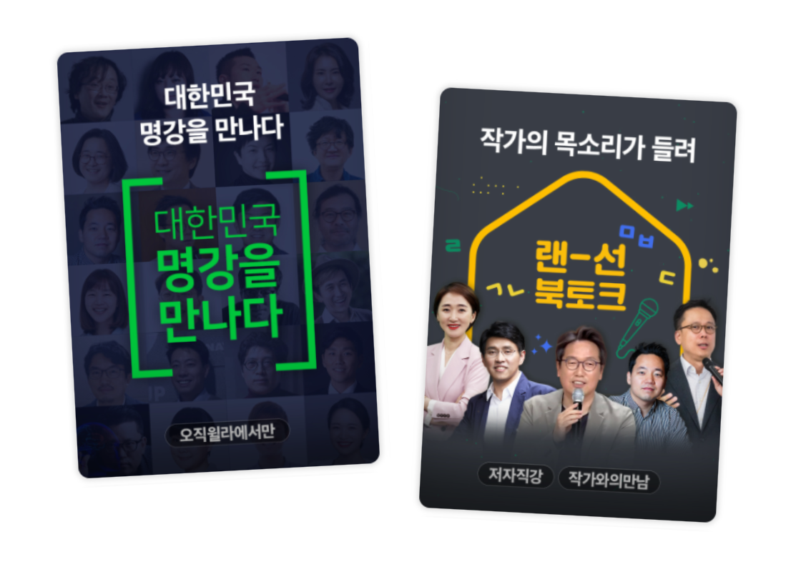

서비스를 채울 콘텐츠와 그것을 운영할 체계를 함께
윌라는 성우가 읽어주는 오디오북과 지식 강의를 제공하는 구독 플랫폼입니다. 저는 서비스 준비 단계에 첫 멤버로 합류해 콘텐츠 상품을 구성하고 이를 지속적으로 제공할 제작 및 운영 체계를 마련했습니다.
1. 콘텐츠 선정과 상품 기획
오디오북 도서를 선정하고 고객의 청취 방식과 윌라의 정체성을 반영한 콘텐츠 시리즈를 기획했습니다.
2. 제작 기준 수립과 공급 체계 구축
아이템 발굴부터 유형 선정과 제작까지 기획 절차와 가이드를 마련했습니다. 자체 제작과 제휴를 함께 계획하고 편성표를 관리해 라인업을 공급했습니다.
3. CMS 구축과 운영 기능 확장
콘텐츠 등록과 관리를 위한 CMS(Content Management System, 콘텐츠 관리 시스템)를 구축하고 편성과 전시를 지원하도록 기능을 확장했습니다. 콘텐츠의 종료와 갱신에 따른 라인업 변화를 예상해 다음 공급도 준비했습니다.
윌라에서 들을 이유가 있는 콘텐츠를 구성했습니다
서비스 초기, 고객이 선택할 콘텐츠의 구색을 갖추면서 윌라에서만 경험할 수 있는 오리지널 콘텐츠를 기획해야 했습니다. 오디오북으로 제작할 도서를 선정하고 클래스의 주제와 형식, 출연자를 기획하며 서비스의 첫 콘텐츠 구성을 마련했습니다.
오디오북은 성우의 낭독으로 작품을 감상하는 경험에, 클래스는 작가와 전문가의 목소리로 생각과 지식을 직접 듣는 경험에 주목했습니다. 이 방향을 오디오북 대작 시리즈, 요일별 팟캐스트형 클래스, 명사 인터뷰 등으로 구체화하면서 서로 다른 관심사와 청취 상황을 담았습니다.
서비스 운영 중에는 오디오북 이용 고객의 청취 패턴을 클래스 기획에 반영했습니다. 기존 클래스는 대부분 회차당 20분 미만이었지만 오디오북 이용 고객은 긴 호흡으로 듣는 데 익숙했습니다. 한 주제의 이야기를 충분히 따라갈 수 있도록 60~90분 분량의 오디오 특강을 기획하고 〈대한민국 명강을 만나다〉와 〈랜선 북토크〉 시리즈로 구체화했습니다.
주제도 오디오북과 연결했습니다. 오디오북을 출간한 저자가 책의 이야기를 더 깊이 풀어내거나 관련된 다른 주제로 강연하도록 구성하고 저자 섭외와 강연 주제, 원고를 함께 검토했습니다. 작품을 들은 뒤 작가의 해석을 찾거나 작가의 이야기를 먼저 접한 뒤 작품을 선택할 수 있도록, 오디오북과 클래스가 서로에 대한 관심을 넓히는 콘텐츠로 기획했습니다. 두 유형의 콘텐츠를 함께 듣는 경험이 구독자의 만족으로 이어지도록 하는 것이 기획의 방향이었습니다.


콘텐츠 기획을 반복 가능한 제작과 공급 체계로 연결했습니다
이렇게 구성한 라인업을 안정적으로 제공하려면 다음 콘텐츠를 발굴하고 제작할 과정을 조직의 작업 방식으로 남겨야 했습니다. 특히 클래스는 아이템을 찾는 것과 그 내용을 어떤 유형으로 전달할지 정하는 일이 중요했습니다. 아이템 도출부터 커리큘럼 구성과 미디어 유형 선정, 기획안 리뷰까지 절차를 정리하고 기획안 양식과 콘텐츠 개발 가이드로 남겼습니다.
기획 이후의 제작 과정도 유형별 포맷으로 정리했습니다. 작업 단계와 산출물, 담당자의 역할을 명시하고 완성된 콘텐츠를 서비스에 출시할 수 있는지 판단할 검수 기준을 마련했습니다.
전체 라인업은 자체 제작과 제휴를 함께 계획해 구성했습니다. 직접 제작할 콘텐츠와 외부에서 확보할 콘텐츠를 구분하고 제휴가 필요한 콘텐츠는 적합한 파트너를 선정해 계약과 도입 일정을 관리했습니다. 두 경로로 확보할 콘텐츠를 연간 편성표에 반영하고 주간과 일간 공개 일정을 관리했습니다. 신규 콘텐츠의 공개뿐 아니라 기존 콘텐츠의 종료와 갱신에 따른 라인업 변화도 공급 계획에 반영해 보강이 필요한 콘텐츠의 제작과 제휴 수급을 미리 준비했습니다.
콘텐츠 관리에서 편성과 전시로 CMS의 역할을 확장했습니다
자체 제작과 제휴로 확보한 콘텐츠를 서비스에 공급하려면 서로 다른 유형과 구성을 공통 기준으로 관리할 수 있어야 했습니다. 초기 CMS를 기획할 때는 콘텐츠를 어떤 단위로 등록하고 그 안에 포함된 재생 파일과 정보를 어떻게 연결할지부터 정했습니다. 오디오북 한 권과 그 안의 목차, 클래스 하나와 개별 강의 클립을 구분하고 상위 콘텐츠와 하위 구성의 관계를 코드 체계에 반영했습니다. 자체 제작과 제휴 등 수급 경로도 구분해 콘텐츠를 식별하고 콘텐츠 및 강사 정보와 미디어 파일을 연결해 관리할 수 있도록 구축했습니다.
이 식별 체계는 분기별 정산을 위한 기준이기도 했습니다. 윌라는 분기 전체 재생시간에서 개별 콘텐츠가 차지하는 비중을 기여도로 삼아 정산 금액을 배분했습니다. CMS에서는 정산 대상 콘텐츠의 식별 정보를 관리하고 기여도에 따른 금액 산정은 CMS 외부의 별도 로직에서 처리했습니다.
서비스 운영이 이어지면서 CMS의 범위를 콘텐츠 등록과 관리에서 편성과 전시로 넓혔습니다. 고객에게 선보일 콘텐츠와 노출 지면을 운영할 수 있도록 필요한 기능을 기획하고 확장했습니다.
서비스의 시작부터 성장까지 콘텐츠와 운영의 기반을 마련했습니다
윌라에서는 콘텐츠를 끝까지 듣는 경험이 무료 체험에서 유료 구독으로 전환하는 데 중요한 지표였습니다. 〈대한민국 명강을 만나다〉와 〈랜선 북토크〉를 포함한 오디오 특강 시리즈는 평균 완청률 70%를 기록했습니다. 이는 두 시리즈가 고객의 몰입을 이끄는 윌라 클래스의 시그니처 콘텐츠로 자리 잡았음을 보여주는 성과였습니다.
앞서 마련한 유형별 제작 포맷과 출시 검수 기준을 외주 프로덕션과의 협업에도 적용했습니다. 이처럼 제작 과정을 표준화한 결과, 제작 리드타임을 30% 단축했습니다. 동일한 인적 자원과 물적 자원으로 연간 자체 제작량도 약 3배로 늘렸습니다.
저는 서비스 준비 단계부터 시리즈 C 투자 유치 이후까지 콘텐츠 상품 기획과 운영 기반 구축을 함께 맡았습니다. 처음에는 구독자가 선택할 콘텐츠의 구색을 갖추고 이후에는 그 라인업을 지속적으로 확대할 수 있도록 제작과 공급, CMS를 연결했습니다. 구독자가 들을 콘텐츠와 그 콘텐츠를 지속적으로 제공할 체계를 함께 마련하며 윌라의 시작과 성장을 뒷받침했습니다.